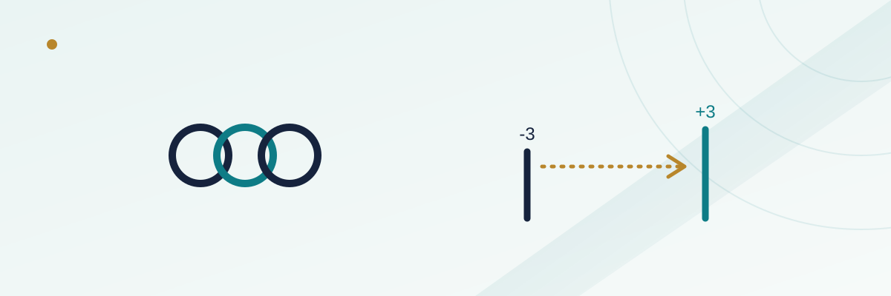

Teasers vs. Parlays: When a Teaser Actually Makes Mathematical Sense

Ask ten bettors why they like teasers and most will say some version of "it's safer" — you're moving the number in your favor, so each leg is easier to win. That's true as far as it goes. What it leaves out is that sportsbooks price teasers to take that easier win back, and whether the trade is actually good for you depends entirely on how much easier the points really made each leg. Sometimes they make it easier by a lot. Sometimes they barely move the needle. A teaser doesn't know the difference — only the math does.
In this guide
- What a parlay's payout math is actually doing
- What a teaser trades away, and what standard pricing looks like
- The math test: did the points pay for themselves?
- Same two games, parlayed vs. teased, side by side
- Why this test mostly fails outside the NFL's key numbers
- The mistake: treating "teaser" as a synonym for "safer"
What a parlay's payout math is actually doing
A parlay multiplies the decimal odds of every leg together, then pays out on that combined number if every leg wins. Two legs at standard -110 pricing (decimal odds of 1.91 each) combine to roughly 3.65, or about +264 in American odds — bet $100 and a winning two-team parlay returns about $364, for $264 in profit. Add a third -110 leg and the combined decimal odds climb to roughly 6.96, or about +596.
Here's the part that surprises a lot of casual bettors: a parlay built from fair, equally-priced -110 legs doesn't require you to beat a higher win rate per leg than a single bet does. The breakeven win rate on one -110 bet is 52.4% (you need to win 110 of every 210 units wagered just to break even against the vig). Multiply two independent 52.4%-probability events together and solve for the breakeven of the combined bet, and it comes right back to 52.4% per leg — because combining two fair-vig bets compounds the vig proportionally along with the odds. The parlay isn't a worse per-leg bet. It's the same per-leg bet with the variance stacked, so that any single miss costs you the whole ticket instead of just that one wager.
What a teaser trades away, and what standard pricing looks like
A teaser moves the point spread or total on every leg in your favor by a fixed number of points — commonly 6, 6.5, or 7 on NFL sides and totals — in exchange for pricing that pays far less than a standard parlay of the same number of legs. You're not betting the games at their actual lines anymore; you're betting an easier version of each one, and paying for that upgrade through worse odds on the combined ticket.
| Teams teased (6-point card) | Typical odds | Decimal odds | Combined breakeven win rate |
|---|---|---|---|
| 2 teams | -120 | 1.83 | ~54.6% |
| 3 teams | +180 | 2.80 | ~35.7% |
| 4 teams | +300 | 4.00 | ~25.0% |
Compare that to a standard same-size parlay, where a 2-team ticket at true -110 pricing pays roughly +264 and only needs a combined 27.4% win rate to break even. The teaser's 2-team price of -120 asks you to clear a combined 54.6% — nearly double. That gap is exactly what the extra points have to make up. If moving each leg by 6 points doesn't roughly double your actual win probability on each one, you're giving the book more than it's giving you.
The math test: did the points pay for themselves?
Work backward from the breakeven number. A 2-team, 6-point teaser priced at -120 needs a combined win probability of about 54.6%. If both legs are equally likely to win and independent of each other, that means each leg needs to win at roughly 73.9% of the time for the ticket to break even (the square root of 0.546). That's a steep bar — a standard spread bet wins at close to 50%, so you'd need those 6 points to add roughly 24 percentage points of win probability to a single leg, which is an enormous shift for six points of cushion on most games.
It isn't an enormous shift for every six points, though. The NFL's scoring distribution is unusually lumpy around two specific margins — 3 and 7 points — because field goals and touchdowns-plus-extra-point are such common ways to decide close games. A standard 6-point teaser is built to move a line like -3 to +3, or -7 to -1, crossing both of those clustered margins at once. Research on historical NFL scoring margins is the reason this specific case gets singled out as the classic, defensible teaser: crossing both key numbers in one move captures a disproportionate share of final scores, which is plausible enough to actually approach that mid-70s per-leg win rate. We go deeper on exactly why 3 and 7 matter so much in our NFL teasers guide.
Same two games, parlayed vs. teased, side by side
Take two NFL games. Game A has a home favorite at -3, and moving it to +3 on a teaser card crosses the single most common NFL margin. Game B has a favorite at -9.5, and a 6-point teaser only moves it to -3.5 — it still crosses the key number at 3, but it's a smaller relative cushion since the original line was already large. Parlaying both games straight at -110 each pays about +264 on a $100 bet and needs a combined 27.4% win rate. Teasing both to the new numbers on a standard 6-point, 2-team card pays -120 and needs a combined 54.6% win rate.
| Straight parlay (-110 each) | 6-point teaser | |
|---|---|---|
| Payout on $100 | ~$264 profit | ~$83 profit |
| Breakeven win rate needed | ~27.4% (both legs win at their original, harder numbers) | ~54.6% (both legs win at easier, teased numbers) |
| What has to be true for this to be the better choice | N/A — this is the standard-priced option | The 6 points you bought must be worth roughly doubling your actual per-leg win probability |
If both teased legs genuinely approach a 74% individual win probability once the key numbers are crossed, the teaser is the better expected-value play despite the much smaller payout, because it's so much easier to actually land. If one of those legs was already sitting at a big number like -9.5 and the 6 points barely change the realistic outcome, you're paying teaser pricing for a discount that doesn't move the needle nearly enough, and the straight parlay was the better bet all along.
Why this test mostly fails outside the NFL's key numbers
The entire case for teasers rests on a scoring distribution that clusters hard around specific numbers, and the NFL is the sport where that clustering is strongest. The NBA, NHL, and MLB don't have anything close to an equivalent — basketball scoring is spread across a wide, mostly smooth range of possible margins, hockey and baseball totals move in small increments without a dominant "common final margin," and totals in general lack the kind of lumpy clustering that spreads around 3 and 7 have in football. A 6-point basketball teaser or an equivalent total-points teaser in another sport is still priced to require that same steep jump in per-leg win probability, but there's no structural reason those particular points should deliver one. That's why teasers are overwhelmingly an NFL-centric product at most sportsbooks, and why the same logic that makes a 6-point NFL spread teaser defensible mostly doesn't transfer to other sports or bet types just because the word "teaser" is on the ticket.
The mistake: treating "teaser" as a synonym for "safer"
The error isn't believing that teased numbers are easier to win — they genuinely are, leg for leg. The error is assuming that because each leg is easier, the overall bet must be a better deal, without checking what the sportsbook charged for that easier leg. A teaser is still a parlay in every sense that matters: every leg has to win, and missing one loses the whole ticket. The only thing that changed is the price of each leg and the number attached to it. Run the breakeven math — or at least sanity-check whether the points you're buying cross a genuine key number — before assuming "teaser" automatically means "lower risk." Most of the time, outside the classic 3-and-7-crossing NFL case, a straight parlay at the original numbers is the mathematically cleaner bet, even though it feels riskier on paper.
Frequently asked questions
Is a teaser ever a bad bet even if it crosses a key number?
It can still be a poor bet if the original line was already very lopsided, since 6 points matters less to a game that was never going to be close than it does to a game sitting right on a key number. Crossing 3 and 7 is a necessary condition for a defensible teaser, not a guarantee by itself.
Why does a bigger teaser (more teams) pay so much less relative to the points bought?
Because the sportsbook is compounding its vig across more legs, the same way it does on a parlay. More teams means more chances for one leg to miss, so the book needs the combined required win rate to be lower, which it achieves by cutting the payout further.
Do totals teasers work the same way as spread teasers?
Mechanically, yes — you're moving the over/under number in your favor for the same reduced pricing. The same math test applies: the shift only pays off if it meaningfully raises the probability that the final combined score lands on your side of the new number.
Can you mix teased and straight bets on the same ticket?
No. A teaser ticket applies the same point adjustment and the same reduced pricing to every leg on that specific bet slip. If you want one game teased and another bet at its original number, those have to be placed as separate wagers.